This project starts with the 2D convolution, and finds new things to do with it. For example, if you slide a kernel of differences over an image and you get edges. Another example is if you slide a Gaussian and you get the blur. Subtract the blur from the original and you have isolated the fine detail, which we can then amplify to sharpen, or put onto a different photograph.
Part 1.1 · Convolutions from Scratch
I wrote 2D convolution twice, first with four nested loops and then with two. Both zero-pad the input by half the kernel size so the output keeps the input's dimensions, and both flip the kernel before applying it, which is what separates convolution from correlation.
Four loops
def convolution_four_loops(image, kernel):
rows, cols = image.shape
krows, kcols = kernel.shape
py, px = krows // 2, kcols // 2
padded = np.pad(image, ((py, py), (px, px)), mode="constant")
flipped = np.flip(kernel, axis=(0, 1))
res = np.zeros_like(image, dtype=float)
for r in range(rows):
for c in range(cols):
for a in range(krows):
for b in range(kcols):
res[r, c] += padded[r + a, c + b] * flipped[a, b]
return resTwo loops
The inner pair of loops does nothing but multiply a kernel-sized window against the kernel and sum it, so NumPy can do the whole window at once:
def convolution_two_loops(image, kernel):
rows, cols = image.shape
krows, kcols = kernel.shape
py, px = krows // 2, kcols // 2
padded = np.pad(image, ((py, py), (px, px)), mode="constant")
flipped = np.flip(kernel, axis=(0, 1))
res = np.zeros_like(image, dtype=float)
for r in range(rows):
for c in range(cols):
patch = padded[r:r + krows, c:c + kcols]
res[r, c] = np.sum(patch * flipped)
return resChecking against SciPy
Both implementations match scipy.signal.convolve2d exactly, on a 3×3 test matrix and on a real image crop:
four loops matches scipy: True
two loops matches scipy: TrueRuntime
Measured on a 150×150 crop with the 9×9 box filter. I timed on a crop rather than the full photo because the four-loop version on the whole image takes minutes.
| Implementation | Time | Relative |
|---|---|---|
| four loops | 0.331 s | 1× |
| two loops | 0.025 s | 13× faster |
scipy.signal.convolve2d | 0.0015 s | 221× faster |
The gap is due to how much work happens inside the Python interpreter. The four-loop version runs all 150 × 150 × 81 ≈ 1.8 million multiply-adds as Python bytecode. The two-loop version hands each 9×9 window to NumPy, so only 22,500 iterations are interpreted and the 81 multiplies inside each one run in compiled C. SciPy pushes the whole double loop into compiled code, which costs another order of magnitude on top.
Boundaries
I pad with zeros by kh//2 and kw//2, which is equivalent to mode="same", boundary="fill", fillvalue=0 in SciPy. This keeps the output the same size as the input, but it does have a cost. The outer few pixels of the box-filtered image are darkened, because those averages mix real pixels with the black padding. SciPy also offers boundary="symm", which mirrors the image at the edge, and boundary="wrap", which tiles it. Both avoid the dark border by inventing plausible content instead of zeros.
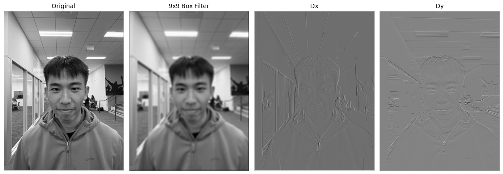
Part 1.2 · Finite Difference Operator
Convolving the cameraman with Dx = [1, -1] and Dy = [1, -1]ᵀ gives the partial derivatives in x and y. Combining them into the gradient magnitude, sqrt(Dx² + Dy²), gives a single measure of edge strength at every pixel, which I then threshold to get a binary edge map.
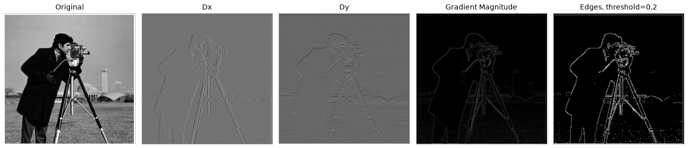
Choosing the threshold
I swept six thresholds rather than guessing one.
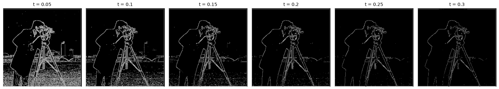
| Threshold | Pixels kept | What it looks like |
|---|---|---|
| 0.05 | 15.2% | The grass is solid speckle. Unusable. |
| 0.10 | 8.7% | Lower half still heavily noisy. |
| 0.15 | 5.7% | Grass mostly clean, some residual speckle. |
| 0.20 | 4.3% | Grass clean; coat, tripod, camera and horizon all intact. |
| 0.25 | 3.4% | Distant buildings start breaking up. |
| 0.30 | 2.8% | Skyline gone, tripod legs fragmenting. |
I picked 0.20. A single global threshold has no way to tell it apart from the tripod legs except by magnitude, so every threshold has a tradeoff. Below 0.15 the field floods with speckle. Above 0.25 the distant skyline starts disappearing while the field is already clean, so you are paying real edges for noise you have already removed. 0.20 sits in the gap between those two main failures.
Part 1.3 · Derivative of Gaussian Filter
The Part 1.2 result is noisy because differentiation amplifies high frequencies. The fix is to smooth first. I built a 9×9 Gaussian with cv2.getGaussianKernel(9, 2) and an outer product, blurred the cameraman, and repeated the whole gradient pipeline.
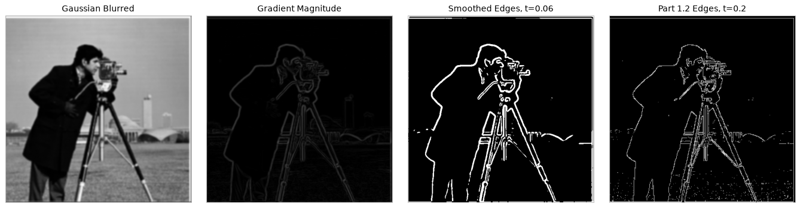
What changed
| 1.2 — raw finite difference | 1.3 — smoothed first | |
|---|---|---|
| Threshold needed | 0.20 | 0.06 |
| Grass field | speckle survives even at 0.20 | fully suppressed |
| Coat outline | dotted, breaks up | one continuous stroke |
| Edge width | 1px, ragged | ~3px, smooth |
| Fine detail | camera knobs distinct | knobs merge together |
Smoothing gets us continuous, noise-free contours and pays for it in localization, where edges get thicker and nearby details merge. The threshold had to drop by more than 3× because blurring reduces the peak gradient at every edge. The same edges are still the strongest responses in the image, just at smaller absolute values.
Folding two convolutions into one
Because convolution is associative, (I ∗ G) ∗ Dx = I ∗ (G ∗ Dx). So instead of blurring and then differentiating, I can convolve the Gaussian with the difference operator once, up front, and apply the resulting derivative-of-Gaussian filter directly to the original image.
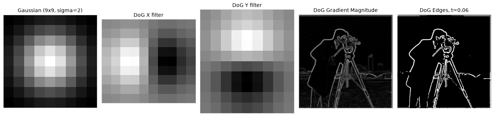
The two routes are the same computation:
mean |difference| everywhere: 0.00129
mean |difference| interior: 6.9e-17 <- machine precision
binary edge maps identical: TrueIn the interior of the image the two methods agree to floating-point precision, and their thresholded edge maps are bit-for-bit identical. The discrepancy is in a 10-pixel border, where blur-then-differentiate zero-pads twice, once per convolution, while the single DoG filter pads once. The two make different assumptions about what lies outside the image, so they disagree exactly where that assumption is doing the work.
Part 2.1 · Image "Sharpening"
A Gaussian is a low-pass filter, so image - blur(image) is what it threw away, which is the high frequencies. An image reads as sharper when its high frequencies are stronger, so adding a scaled copy of that residual back sharpens it:
sharpened = image + α · (image - G ∗ image)Distributing the convolution turns the whole thing into a single kernel, the unsharp mask, where δ is the unit impulse:
unsharp = (1 + α)·δ - α·G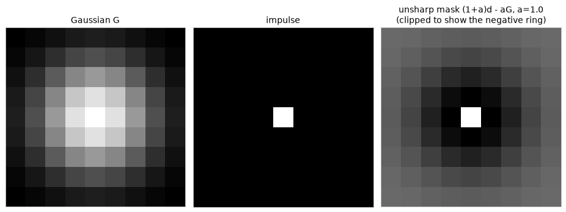
Applying that single kernel gives the same answer as the two-step version, to machine precision:
one-kernel matches two-step (interior): 9.99e-16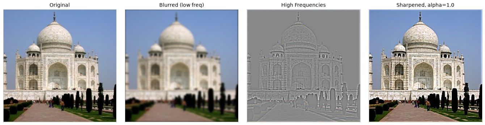
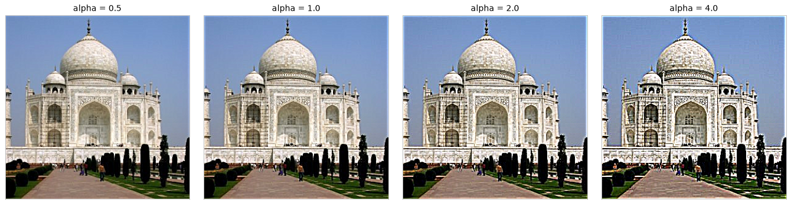
α = 0.5 is barely perceptible, 1.0 is the sweet spot, 2.0 is aggressive but still plausible, and 4.0 breaks down visibly. That failure mode is the best example of what unsharp masking actually does. It does not add detail, it exaggerates the local contrast step at every edge. Past some α you stop getting sharpness and start getting overshoot rings.
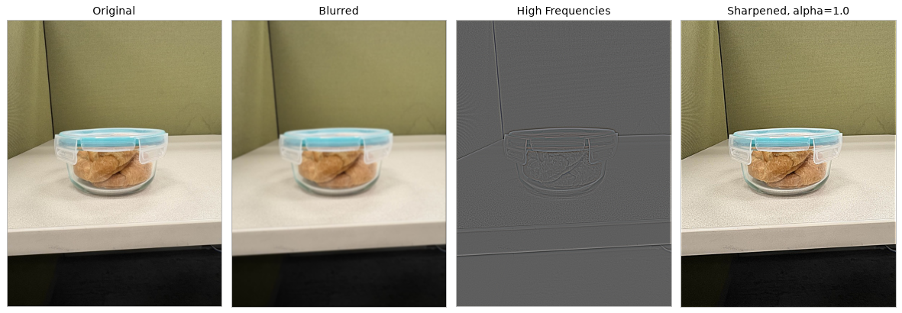
This one is a good counterexample to the Taj. The scene is mostly smooth surfaces, so its high-frequency panel is nearly flat grey, and what sharpening mainly amplifies is the fabric weave on the cubicle panel and the speckle on the desktop. Sharpening helps images that have real fine structure. On images that do not, it mostly amplifies noise.
Blurring a sharp image and sharpening it back
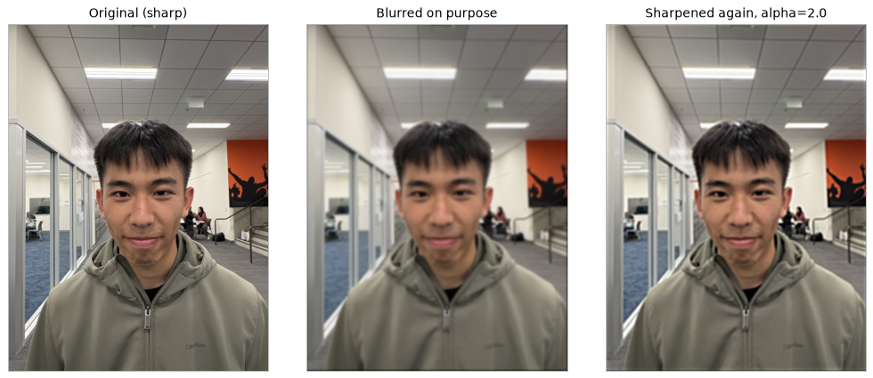
| Comparison | RMSE |
|---|---|
| original vs. blurred | 0.0471 |
| original vs. re-sharpened | 0.0365 |
Sharpening recovers only 22% of the error. The global contrast does come back and the image also reads as less blurry, but the individual hair strands and the thin ceiling-tile seams do not return. They were smoothed into flat regions, and multiplying a flat region by any α leaves it flat. The Gaussian attenuated those frequencies toward zero, and unsharp masking is a linear operation, which means it can rescale what is left but not reconstruct what was zeroed out. Sharpening is not deblurring.
Part 2.2 · Hybrid Images
Low-pass one image, high-pass another, add them together. Up close the eye has the fine detail available, which is when the high-frequency image dominates. From a distance only the smooth content survives, and what we perceive flips.
Alignment
I used the provided align_image_code.py, clicking two corresponding points (both eyes, in the same order) in each image. Its get_points function needs a mouse, so rather than requiring six clicks on every run I recorded the returned coordinates as constants and factored the rest of align_images into align_with_points. Every other starter function like recenter, rescale_images, rotate_im1, and match_img_size is used unchanged.
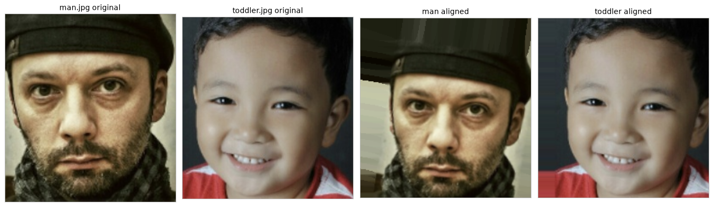
Good example, step by step
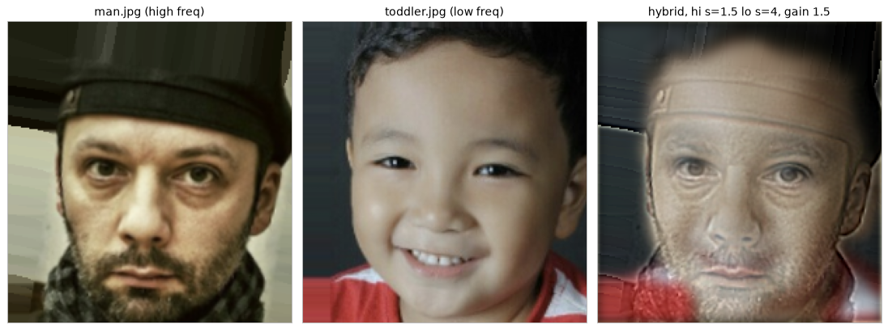
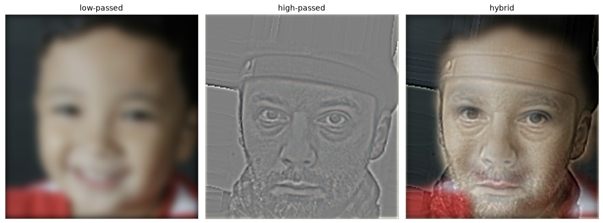
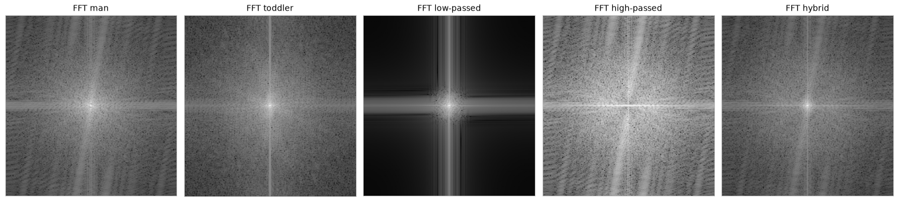
Both inputs have broad spectra. The low-passed image collapses to a bright core with dark corners, since only frequencies near the origin survive. The high-passed image is the exact inverse, a dark hole at the centre with energy pushed out to the periphery. And the hybrid's spectrum is visibly the union of the two, bright in the middle and at the edges, because it is carrying one image's low frequencies and the other's high ones simultaneously.
Cutoffs
I chose the cutoffs by rendering each hybrid at roughly 25% scale rather than judging at full size. Downscaling is what viewing from a distance physically does.
| Hybrid | high σ | low σ | gain | aligned size |
|---|---|---|---|---|
| Derek + Nutmeg | 2 | 6 | 1.5 | 600×373 |
| man + toddler | 1.5 | 4 | 1.5 | 215×203 |
| mooncake + moon | 1 | 3 | 2.2 | 305×316 |
The sigmas differ per pair because the images do. A σ of 6 on a 600-pixel image and on a 200-pixel image are not the same filter in any meaningful sense, so the cutoff is only interpretable relative to image size. The gain column is a small deviation from the textbook formulation, where Oliva et al. simply add the two filtered images, and I scale the high-frequency component by 1.5 to 2.2 to push the close-up reading harder. I used a gain rather than raising the high σ deliberately, because raising σ would widen the band that survives and therefore move the cutoff, which is what I just argued for.
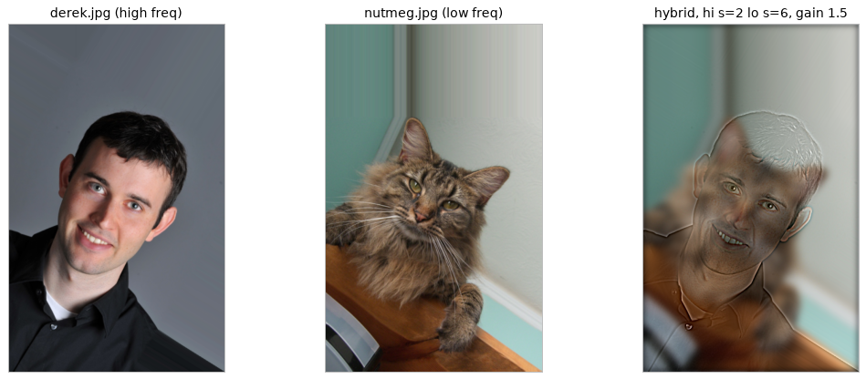
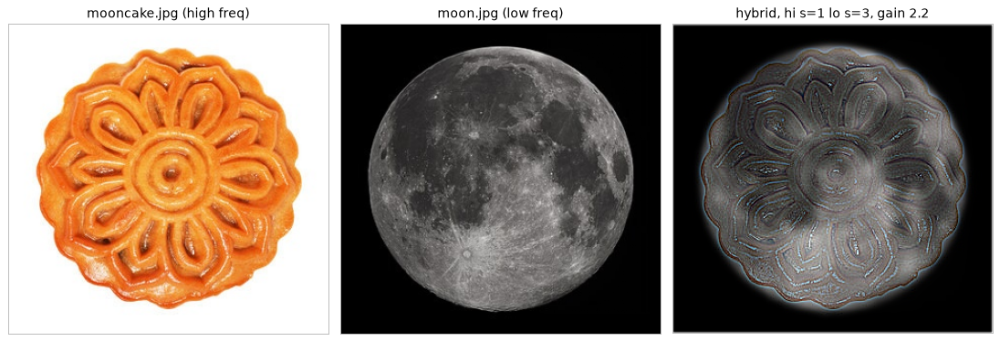
Part 2.3 · Gaussian and Laplacian Stacks
A stack is a pyramid without the downsampling, where every level keeps the full resolution. The Gaussian stack blurs progressively, and the Laplacian stack stores the difference between consecutive Gaussian levels, so each Laplacian level holds one band of frequencies. The final level is the leftover low-frequency residual.
def gaussian_stack(image, levels=5, sigma=2):
# sigma doubles each level so the blur grows like a pyramid would
stack = [image]
for i in range(levels - 1):
stack.append(convolve_color(stack[-1], gauss(sigma * 2 ** i), edge="symm"))
return stack
def laplacian_stack(g_stack):
bands = [g_stack[i] - g_stack[i + 1] for i in range(len(g_stack) - 1)]
return bands + [g_stack[-1]]apple stack sums back to original: True
orange stack sums back to original: True
every level same shape: TrueThe first two checks confirm the Laplacian levels telescope, which means summing them reconstructs the original exactly. The third is the one that distinguishes a stack from a pyramid, and it is the property the whole section exists to demonstrate.
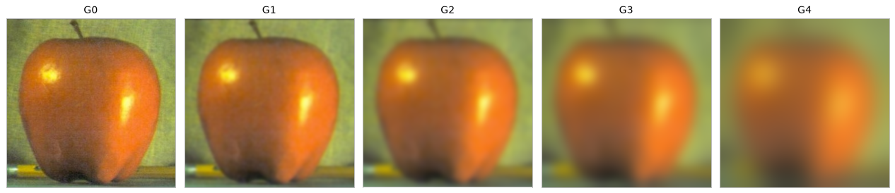
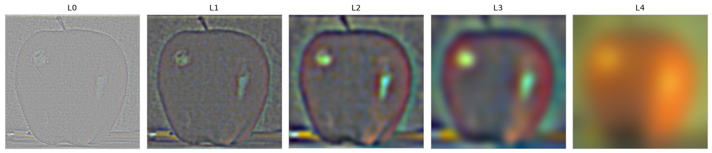
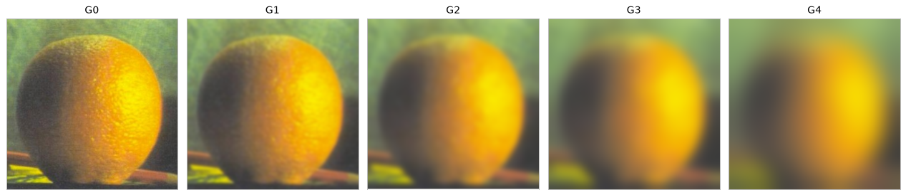
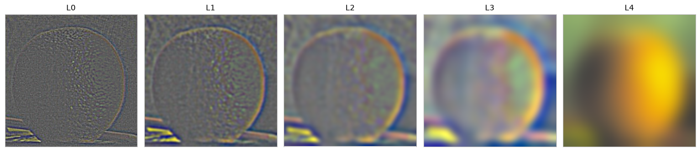
One note on σ is that it doubles at each level rather than staying fixed. Reapplying the same σ = 2 kernel barely does anything, because variances add, so after n blurs the effective σ is only 2√n and level 4 is visually indistinguishable from level 1. Doubling reaches an effective σ of 18.4 by level 4, which is what makes the coarsest level nearly featureless.
Part 2.4 · Multiresolution Blending
Take the Laplacian stack of each image and the Gaussian stack of the mask, then combine them band by band:
blended[k] = A[k] · mask[k] + B[k] · (1 - mask[k])The mask being a Gaussian stack is what works. At the finest band the mask is essentially a step, which is why texture switches abruptly. At the coarsest band the mask has been blurred into a wide ramp, where colour cross-fades slowly instead. Each frequency band is blended over a distance proportional to its own scale.
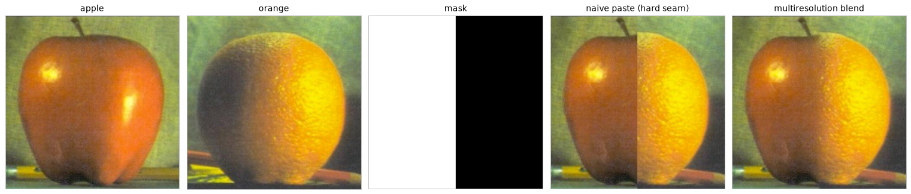
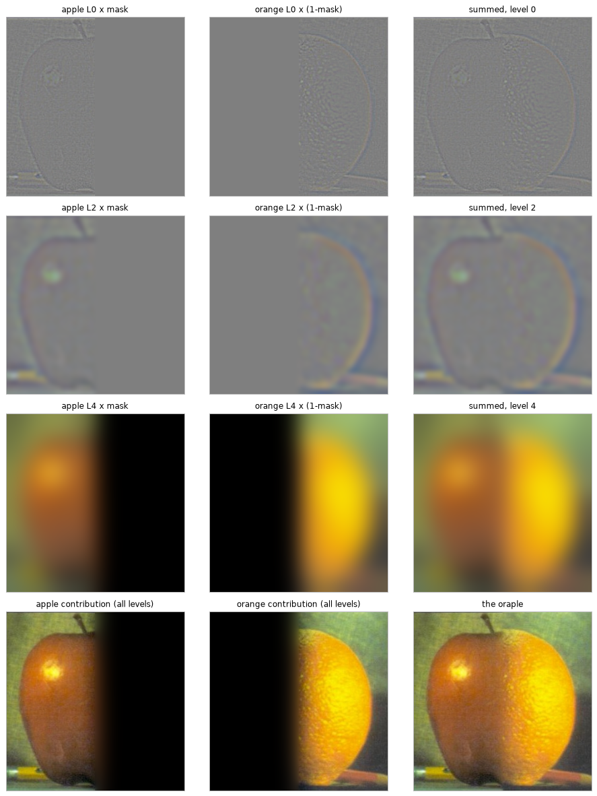
Reading down the columns shows the mechanism directly. At L0 the mask switches abruptly, which costs nothing because the finest band carries very little energy. By L2 the transition has softened into a visible gradient. By L4 it is a wide smooth ramp. That is exactly why, in the final image, the colour transition happens gradually across the fruit while the texture transition stays sharp.
Two custom blends
Both use an irregular mask, which is a disc whose radius rides a cosine,
r(θ) = r₀ · (1 + 0.25 · cos 8θ)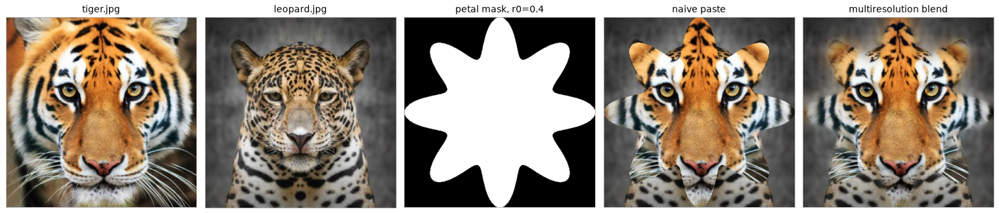
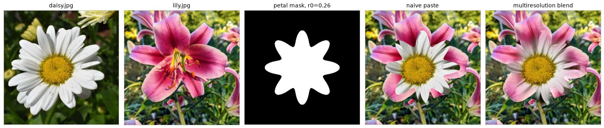
I picked this mask because it kind fits the roundish images I chose. On the flowers, the eight lobes follow petal structure, so the seam runs along the natural pattern instead of cutting across it, which is why the blend comes out as one flower rather than two pasted together. On the cats, the same shape frames the face in a soft rosette instead of a sharp or distinct circle.
The only per-pair difference is the radius. I swept r₀ at 0.26, 0.32 and 0.40 on the flowers. At 0.40 the daisy fills the frame and the lily disappears entirely, leaving nothing to blend. The cats need the larger radius for the opposite reason, since the mask has to be big enough to contain the tiger's whole face.
What I learned
What was interesting about this project is that all of these seven sections are basically one operation wearing a different hat. The associativity of convolution kept turning two steps into one. For example, blur-then-differentiate collapsed into a single DoG kernel and agreed to 6.9e-17, while blur-subtract-scale-add collapsed into a single unsharp mask and agreed to 9.99e-16. They are the same computation reorganised, and checking them numerically rather than eyeballing them is verified this to be the case.
Another thing I did not expect is how much of the work is not the filtering. The hybrid images would either work or not depending on whether two eyes landed within a few pixels of each other. My first attempts failed because I had estimated the eye coordinates badly, not because the math was wrong, which took me a while to realize. Similarly, the boundary condition, which was mentioned in Part 1.1, was actually a real decision by Part 2.3, where zero-padding a 97×97 kernel would have ruined every blend. The filter is the easy part. What you feed the filter and what you assume beyond its edges is what the results are dependent on.